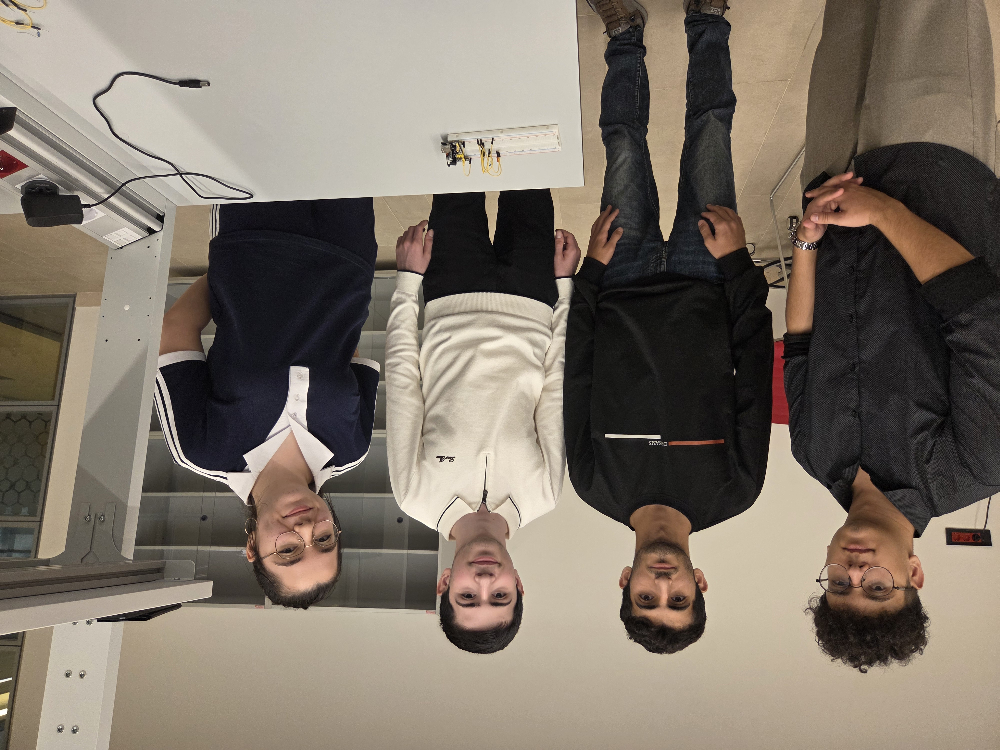
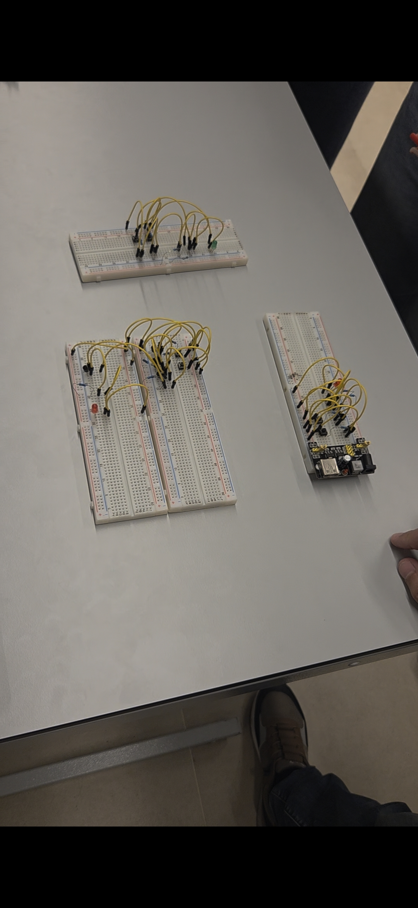
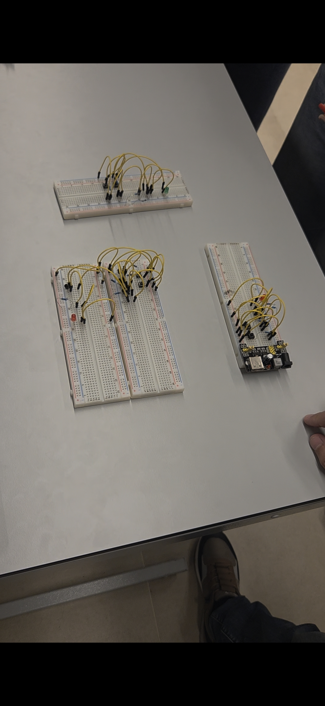
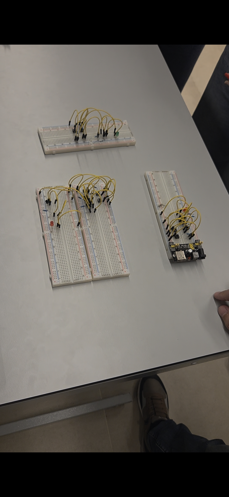

Project 1: How Does Hardware Work?
In this collaborative project, my team and I were tasked to construct some of the basic logic gates such as NOT, OR, AND, and more.
We collaborated with other teams to build more complex gates that required additional components, like the XOR gate. This project gave us hands-on experience with digital logic, circuit design, and teamwork.


 


Project 2: Hour of Code
For this project, we were tasked with selecting a school to organize an informative event on basic algorithms.
This year, the event was titled "Hour of AI". We presented and demonstrated fundamental algorithms and artificial intelligence concepts in an engaging and accessible way.


Our video is not ready yet